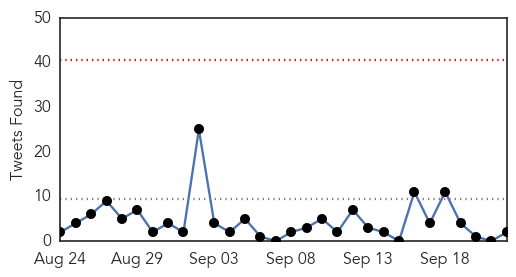
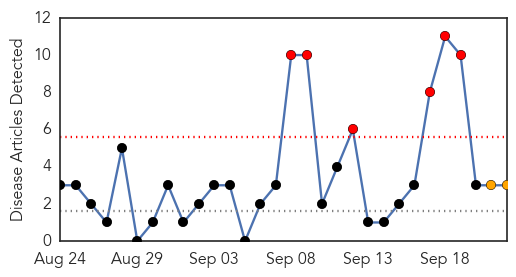
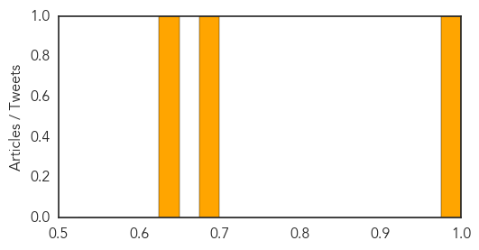

Ebola
30-Day Web Trend
0 alerts, 0 warnings
30-Day Twitter Trend
0 alerts, 0 warnings

Article Locations
Article Confidences
Top Articles:
- 1.000
- Woman treated at SCGH for Ebola-like symptoms
- 1.000
- Guinea arrests 20 over killings of Ebola team
- 1.000
- Ebola could infect 1.4 million people by January
- 1.000
- New effort to fight Ebola in Liberia would move infected patients out of their homes
- 1.000
- Ebola toll passes 2,800 but ’contained’ in Senegal, Nigeria
- 1.000
- First traveller from Ebola region arrives in Geneva
- 1.000
- Woman in Perth hospital with Ebola-like symptoms
- 1.000
- The virus, the response, the biggest concerns.
- 1.000
- Ebola lockdown ends, Sierra Leone returning to normal
- 1.000
- Advance Team for Ebola Response Arrives in West Africa
- 1.000
- Ebola toll passes 2,800 but 'contained' in Senegal, Nigeria : WHO
- 1.000
- Congo's Ebola outbreak 'almost over', prime minister says
- 1.000
- Ebola outbreak: Death toll passes 2,800; virus contained in Senegal and Nigeria, WHO says
- 1.000
- Malaysia General Business Sports and Lifestyle News
- 1.000
- Streets bustling after Sierra Leone shutdown
- 1.000
- Ebola ruled out in Perth hospital scare
- 1.000
- Woman cleared of Ebola in WA scare
- 1.000
- Streets bustling after Sierra Leone shutdown ends
- 1.000
- Nationwide shutdown commences in Sierra Leone as officials search for more Ebola cases
- 1.000
- West Africa gears up to contain Ebola spread
- 1.000
- Ebola virus outbreak: 92 bodies recovered as more cases found in Sierra Leone lockdown
- 1.000
- West Africa gears up to contain Ebola spread
- 1.000
- Ebola may be contained in Nigeria, Senegal, but death toll rises
- 1.000
- US: Ebola cases could hit 1.4 million by mid-Jan.
- 1.000
- Ebola outbreak: Sierra Leone ends three-day lockdown (+video)
- 1.000
- WHO maintains Ebola health emergency, airs response concerns
- 1.000
- Ebola shutdown campaign in Sierra Leone reached 80% of target households
- 1.000
- Sierra Leone, Liberia brace for new Ebola cases
- 1.000
- Ebola epidemic worsens in western Africa
- 1.000
- Sierra Leone, Liberia brace for new Ebola cases
- 1.000
- Ebola: All eyes on borders, ports
- 1.000
- Streets bustling after Sierra Leone shutdown ends
- 1.000
- Sierra Leone and Liberia hardest hit by Ebola, prepare for new cases - National
- 1.000
- Sierra Leone wraps up 3-day Ebola lockdown
- 1.000
- Study warns swift action needed to curb exponential climb in Ebola outbreak
- 1.000
- Advance team of UN mission for Ebola response arrives in West Afric
- 1.000
- S Leone hails lockdown ‘success’
- 1.000
- Sierra Leone ends Ebola lockdown
- 1.000
- WHO: 21,000 Ebola cases by November if no changes
- 0.999
- Patient in Australia tested for Ebola
- 0.999
- West Africa gears up to contain Ebola spread
- 0.999
- Sierra Leone To End Curfew To Combat Spread Of Ebola Virus, 6 Million People Stay At Their Home During The Lockdown
- 0.999
- Woman in Perth hospital cleared of having Ebola
- 0.999
- Ebola lessons from Uganda
- 0.999
- Streets busy as Ebola lockdown ends
- 0.999
- Briefing: Ebola lessons from Uganda
- 0.999
- Sierra Leone lockdown declared ‘success’
- 0.999
- UNAMID steps up Ebola preventive measures in Sudan
- 0.999
- Latest news on sustainable development, features, opinions, interviews with NGO leaders and multimedia from India and South Asia
- 0.999
- Sierra Leone Faces 'Overflow' Of Ebola Dead As Curfew Ends
Showing top 50 articles...
Top Tweets:
- 0.813
- RT: The Ebola epidemic in W. Africa requires a coordinated, system wide response by the UN & its partners http://t.co/N4eh7xr4j…
- 0.669
- RT: Overwhelmed west Africa ramps up Ebola response http://t.co/mQs4pqxduv via
- 0.638
- endebolanow StayTuned ebola westafrica http://t.co/NoFxIIqW2k
- 0.599
- Not just a health crisis: capacity to deliver food+necessities “on the brink of collapse” in Ebola-affected countries http://t.co/6kzKb44yS9
- 0.595
- Ebola is deadly but malaria steals more lives: @AJEnglish http://t.co/0I4zoEjwFV
- 0.569
- Chikunguyna in FL, @WHO issues ebola update. HealthSecurity http://t.co/H1JhGDbj22
- 0.560
- C-section in Guinea infects 5 doctors with Ebola. http://t.co/NdZR3oNSGF
- 0.521
- RT: @WHO's new Ebola update, four days after the previous one: 500+ new cases reported. Now at 5843, with 2803 deaths. htt…
- 0.520
- RT: Dr Sacra got Tekmira's Ebola drug http://t.co/5oGZQMWxbV
Meningitis
30-Day Web Trend
6 alerts, 2 warnings

30-Day Twitter Trend
1 alerts, 0 warnings

Article Locations
Article Confidences
Top Articles:
Top Tweets:
-
No tweets found for Sep 22, 2014